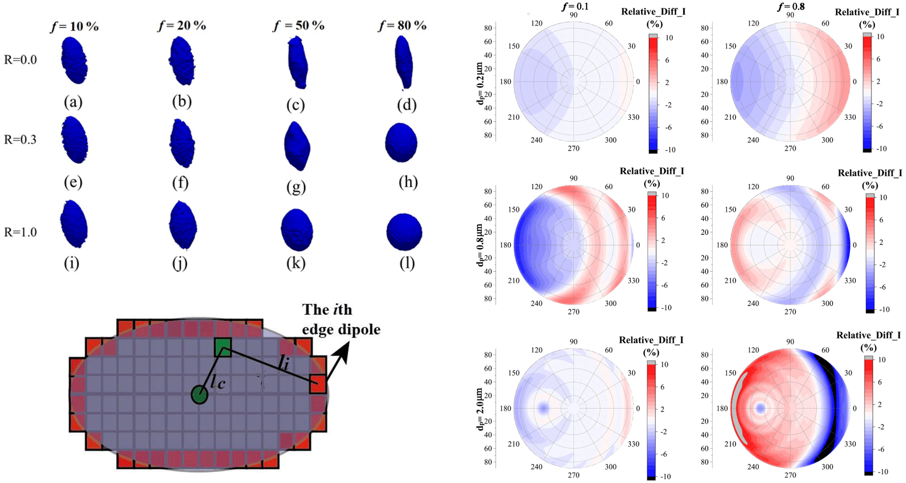

Dr. Jie Luo罗杰Pre-tenured Professor (特聘教授)
智能光电感知团队, 遥感及环境信息仿真课题组 |
 |


我当前为杭州电子科技大学通信工程学院特聘教授。博士毕业于中国科学技术大学，期间在美国圣路易斯华盛顿大学联合培养，毕业后分别担任中国科学院空天信息创新研究院助理研究员、之江实验室高级研究专员，曾担任之江星座预研阶段星载算法主任设计师。
当前作为研究骨干参与浙江省第一颗海洋卫星研制工作，担任Remote sensing、Frontiers in Remote Sensing等多个SCI期刊专刊客座编辑，担任多个中英文期刊编辑与编委。主要从事卫星遥感探测机理及图像信息处理工作，参与十余起航天工程论证。
研究方向主要为遥感信息处理、星载计算、气溶胶云气候效应、图像辐射定标，光散射及辐射传输计算、森林火灾烟雾遥感与监测等，主持国家自然基金青年项目1项，以技术负责人身份负责项目多项，发表SCI论文20余篇，其中第一/通信作者18篇，受大气遥感领域国际顶级学者邀请撰写书籍章节1章，作为指导老师指导学生获中国国际大学生创新大赛国银、省金各一项。
社会任职
Remote sensing等SCI期刊联合专刊“Advances in Environmental Remote Sensing”客座编辑
担任Frontiers in remote sensing等SCI期刊联合专刊“Remote Sensing for Environmental Monitoring”客座编辑
担任Iris Journal of Astronomy and Satellite Communications (IJASC)编辑及编委
担任《三峡生态环境监测》期刊首届青年编委
担任《大气与环境光学学报》期刊青年编委
中国计算机学会(CCF)会员
中国电子学会会员
中国颗粒学会会员
环境光学专业委员会会员
担任Atmospheric Chemistry and Physics, Atmospheric Measurement Techniques, Optics Express, Applied Optics, Journal of geophysical research:Biogeosciences, Remote Sensing, Earth and space science等期刊审稿人
新闻
[2025年4月] 罗杰参加第十一届世界博览会，并做题为《森林火灾早期烟雾光学探测技术与装备》的报告！

[2024年11月] 罗杰参与的浙江省尖兵领雁项目《森林火灾早期探测与地空协同扑救关键技术与装备》获批！
[2024年11月] 罗杰入选《大气与环境光学学报》青年编委！

[2024年9月] 罗杰参与浙江省航空护林站直升机消防演习，见识了实际航空森林火灾灭火过程！

10篇代表论文 [Google Scholar]
| Intrinsic organic carbon could contribute to the unexplained optical measurements of fresh soot Luo, J., Hu, M., Zhang, Q., Li, C., Liu, J., He, H., Li, K., Sun, Y. JGR: Atmospheres, Sep, 2024 |
|

|
Quantifying the effects of the microphysical properties of black carbon on the determination of brown carbon Luo, J., Li, D., Wang, Y., Sun, D., Hou, W., Ren, J., Wu, H., Zhou, P., and Qiu, J. Atmos. Chem. Phys., Jan, 2024 |
| The simulated source apportionment of light absorbing aerosols: Effects of microphysical properties of partially-coated black carbon Luo, J.,Li, Z., Qiu, J., Zhang, Y., Fan, C., Li, L., Wu, H., Zhou, Peng, Li, K. JGR: Atmospheres, May, 2023 |
|
| Regional impacts of black carbon morphologies on shortwave aerosol–radiation interactions: a comparative study between the US and China Luo, J.,Li, Z., Zhang, C., Zhang, Q., Zhang, Y., Zhang, Y., Curci, G., and Chakrabarty, R. K. Atmos. Chem. Phys., Jun, 2022 |
|
|  | The polarimetric characteristics of dust with irregular shapes: evaluation of the spheroid model for single particles Luo, J.,Li, Z., Fan, C., Xu, H., Zhang, Y., Hou, W., Qie, L., Gu, H., Zhu, M., Li, Y., and Li, K. Atmos. Meas. Tech., May, 2022 |
| The fractal characteristics of atmospheric coated soot: implication for morphological analysis Luo, J.,Zhang Q, Zhang C, Zhang Y, Chakrabarty RK J Aerosol Sci, Dec, 2019 |
|

|
Effects of black carbon morphology on brown carbon absorption estimation: from numerical aspects Luo, J.,Zhang, Y., and Zhang, Q. Geosci. Model Dev., Dec, 2019 |
| Optical modeling of black carbon with different coating materials: The effect of coating confgurations Luo, J.,Zhang, Q., Luo, J., Liu, J., Huo, Y., Zhang, Y. Journal of Geophysical Research: Atmospheres, Dec, 2019 |
|
| Effects of brown coatings on the absorption enhancement of black carbon: a numerical investigation Luo, J., Zhang, Y., Wang, F., and Zhang, Q. Atmos. Chem. Phys., Dec, 2019 |
|
| Applying machine learning to estimate the optical properties of black carbon fractal aggregates Luo, J., Zhang, Y., Wang, F., Wang, J., and Zhang, Q. Journal of Quantitative Spectroscopy and Radiative Transfer, Dec, 2019 |
|
专著 [Google Scholar]
| Radiative Properties of Non-spherical Black Carbon Aerosols. In: Kokhanovsky A. (eds) Springer Series in Light Scattering (Chapter 3) Luo, J., Zhang Q., Zhang Y., Li Z. Springer Series in Light Scattering. Springer, Cham. , Oct, 2021 |
|
主要参与项目
1. 国家自然科学基金青年项目：生物质燃烧区域复杂形貌含碳气溶胶偏振光学遥感模型研究， 主持
2. 杭州电子科技大学科研启动项目：大气、海洋背景下含碳气溶胶精准卫星仿真建模与快速反演，主持
3. 浙江省尖兵领雁项目：森林火灾早期探测与地空协同扑救关键技术与装备，参与，排名第2
4. 军校委托项目：直升机气象飞行保障气象监测系统设计 ，技术负责人，参与，排名第2
5. 国家自然科学基金面上项目：含碳气溶胶与粉尘粒子非球形形貌特征及光散射模型研究, 参与
6. 国家自然基金面上项目：融合自然气溶胶散射的球面大气矢量辐射传输方法及晨昏遥感应用，参与
7. 国家自然科学基金联合项目：基于散射矩阵分析和探测过程模拟的民用飞机货舱低误报率烟雾探测研究，参与
荣誉与奖项
长安大学 “国家励志奖学金”(2013，2015)
长安大学 “国家奖学金”（2014）
中国科学技术大学 “研究生国家奖学金"(2018)
获国家留学基金委国家建设高水平大学公派研究生资助(2019)
受大气遥感领域著名学者Alexander Kokhanovsky邀请，参与合著名为《Springer Series in Light Scattering-Volume 7: Light Absorption and Scattering in Turbid Media》的书籍，负责撰写书籍第三章